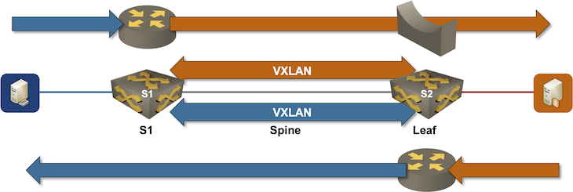

Routing between VXLAN Segments
In the previous lab exercises, we extended isolated VLANs with VXLAN segments. Now, we’ll add routing to the mix: the switches using VXLAN to extend VLANs will also route between them.
The lab topology is as simple as it was in the previous exercises: a pair of hosts per VLAN attached to two directly-connected switches:

Device Requirements
You can use any device supported by the netlab OSPF and VLAN configuration modules. The device should support VXLAN with static ingress replication and routing between VLAN segments.
Start the Lab
Assuming you already set up your lab infrastructure:
- Change directory to
vxlan/3-irb - Execute netlab up
- Log into lab devices with netlab connect and verify that the IP addresses and the OSPF are properly configured.
Existing Device Configuration
- The switches in your lab (S1 and S2) are preconfigured with red and blue VLANs.
- The red and blue VLANs have these VLAN tags and IPv4 prefixes:
| VLAN | VLAN tag | IPv4 prefix |
|---|---|---|
| red | 100 | 172.16.10.0/24 |
| blue | 101 | 172.16.11.0/24 |
- IPv4 addresses are configured on Linux hosts, switch loopback interfaces, and the interswitch link (details).
- Static routes pointing to the to-be-configured switch VLAN IP addresses are configured on the Linux hosts. Each static route points to the IP address of the adjacent switch:
| Host | IPv4 prefix | Next hop |
|---|---|---|
| HR1 | 172.16.0.0/16 | 172.16.10.1 |
| HR2 | 172.16.0.0/16 | 172.16.10.2 |
| HB1 | 172.16.0.0/16 | 172.16.11.1 |
| HB2 | 172.16.0.0/16 | 172.16.11.2 |
- The switches run OSPF in area 0 across the interswitch link (details).
Configure Integrated Routing
You’ll configure IP addresses on switch VLAN interfaces before configuring VXLAN segments:
- Configure the following IP addresses on S1 and S2:
| VLAN | Switch | IP address |
|---|---|---|
| red | S1 | 172.16.10.1/24 |
| S2 | 172.16.10.2/24 | |
| blue | S1 | 172.16.11.1/24 |
| S2 | 172.16.11.2/24 |
- Check that the local inter-VLAN routing works: HR1 should be able to reach HB1, and HR2 should be able to reach HB2
- Verify that cross-switch VLAN connectivity does not work: HR1 cannot reach HR2, HB1 cannot reach HB2, and HR1 cannot reach HB2.
Warning
Do not configure OSPF on VLAN interfaces; you’d get recursive routing (and interesting periodic black holes). Even better, create a tenant VRF and assign VLAN interfaces to that VRF.
Configure VXLAN Segments
Using the procedure you mastered in the Extend a Single VLAN Segment with VXLAN lab exercise, extend both VLANs across the IP network using these VXLAN network identifiers:
| VLAN | VNI |
|---|---|
| red | 10010 |
| blue | 10011 |
Verification
Use ping on hosts to verify that they can all reach each other:
$ netlab connect hr1
Connecting to container clab-irb-hr1, starting bash
hr1:/# ping -c 3 hr2
PING hr2 (172.16.10.4): 56 data bytes
64 bytes from 172.16.10.4: seq=0 ttl=64 time=4.142 ms
64 bytes from 172.16.10.4: seq=1 ttl=64 time=2.205 ms
64 bytes from 172.16.10.4: seq=2 ttl=64 time=2.318 ms
--- hr2 ping statistics ---
3 packets transmitted, 3 packets received, 0% packet loss
round-trip min/avg/max = 2.205/2.888/4.142 ms
hr1:/# ping -c 3 hb1
PING hb1 (172.16.11.5): 56 data bytes
64 bytes from 172.16.11.5: seq=0 ttl=63 time=1.758 ms
64 bytes from 172.16.11.5: seq=1 ttl=63 time=0.871 ms
64 bytes from 172.16.11.5: seq=2 ttl=63 time=0.741 ms
--- hb1 ping statistics ---
3 packets transmitted, 3 packets received, 0% packet loss
round-trip min/avg/max = 0.741/1.123/1.758 ms
hr1:/# ping -c 3 hb2
PING hb2 (172.16.11.6): 56 data bytes
64 bytes from 172.16.11.6: seq=0 ttl=63 time=5.410 ms
64 bytes from 172.16.11.6: seq=1 ttl=63 time=2.072 ms
64 bytes from 172.16.11.6: seq=2 ttl=63 time=2.098 ms
--- hb2 ping statistics ---
3 packets transmitted, 3 packets received, 0% packet loss
round-trip min/avg/max = 2.072/3.193/5.410 ms
Use the troubleshooting hints from the Extend a Single VLAN Segment with VXLAN lab exercise if needed (we expect you’re familiar with the traditional routing between VLAN segments)
Done? Continue to Anycast Gateways on VXLAN Segments.
Behind the Scenes
Each host uses the adjacent switch as the first-hop router. Stretching VLANs over the VXLAN segment thus results in asymmetric Integrated Routing and Bridging (IRB) – the router in the HB1-HR2 path differs from the router in the HR2-HB1 path.

The traceroute printout taken on HB1 and HR2 illustrates the traffic flow:
$ netlab connect hb1 traceroute hr2
Connecting to container clab-irb-hb1, executing traceroute hr2
traceroute to hr2 (172.16.10.4), 30 hops max, 46 byte packets
1 Vlan101.s1 (172.16.11.1) 0.694 ms 0.244 ms 0.203 ms
2 hr2 (172.16.10.4) 5.399 ms 1.373 ms 1.140 ms
$ netlab connect hr2 traceroute hb1
Connecting to container clab-irb-hr2, executing traceroute hb1
traceroute to hb1 (172.16.11.5), 30 hops max, 46 byte packets
1 Vlan100.s2 (172.16.10.2) 0.756 ms 0.428 ms 0.223 ms
2 hb1 (172.16.11.5) 1.112 ms 0.754 ms 0.667 ms
Cheating
- Shut down your lab with the netlab down command
- Start the lab from the
solution.ymltopology with the netlab up solution.yml command - Explore the S1/S2 device configuration
Reference Information
Lab Wiring
| Origin Device | Origin Port | Destination Device | Destination Port |
|---|---|---|---|
| s1 | Ethernet1 | s2 | Ethernet1 |
| hr1 | eth1 | s1 | Ethernet2 |
| hr2 | eth1 | s2 | Ethernet2 |
| hb1 | eth1 | s1 | Ethernet3 |
| hb2 | eth1 | s2 | Ethernet3 |
Lab Addressing
| Node/Interface | IPv4 Address | IPv6 Address | Description |
|---|---|---|---|
| s1 | 10.0.0.1/32 | Loopback | |
| Ethernet1 | 10.1.0.1/30 | s1 -> s2 | |
| Ethernet2 | [Access VLAN red] s1 -> hr1 | ||
| Ethernet3 | [Access VLAN blue] s1 -> hb1 | ||
| s2 | 10.0.0.2/32 | Loopback | |
| Ethernet1 | 10.1.0.2/30 | s2 -> s1 | |
| Ethernet2 | [Access VLAN red] s2 -> hr2 | ||
| Ethernet3 | [Access VLAN blue] s2 -> hb2 | ||
| hr1 | |||
| eth1 | 172.16.10.3/24 | hr1 -> [s1,hr2,s2] | |
| hr2 | |||
| eth1 | 172.16.10.4/24 | hr2 -> [hr1,s1,s2] | |
| hb1 | |||
| eth1 | 172.16.11.5/24 | hb1 -> [s1,hb2,s2] | |
| hb2 | |||
| eth1 | 172.16.11.6/24 | hb2 -> [hb1,s1,s2] |
OSPF Routing (Area 0)
| Router | Interface | IPv4 Address | Neighbor(s) |
|---|---|---|---|
| s1 | Loopback | 10.0.0.1/32 | |
| Ethernet1 | 10.1.0.1/30 | s2 | |
| s2 | Loopback | 10.0.0.2/32 | |
| Ethernet1 | 10.1.0.2/30 | s1 |